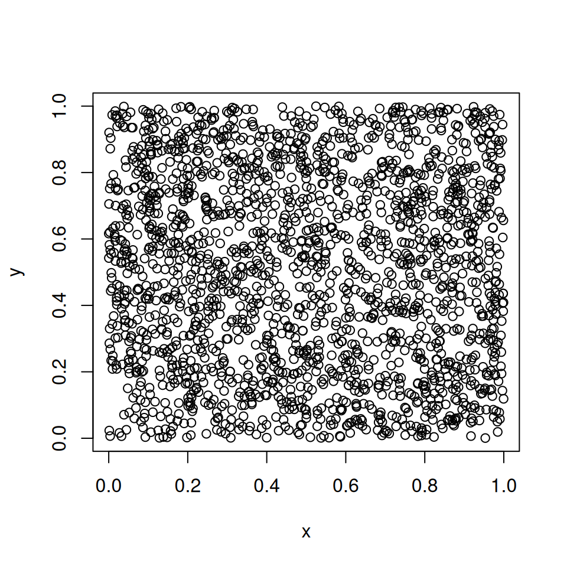

16wk-1: 기말고사
1. 다음은 08wk-1의 엑스노트 광고에 대한 진술이다.

- 신민아가 고층빌딩에서 엑스노트를 벽면유리에 테잎을 붙여 프리젠테이션을 하고 있다.
- 젋은여성이 노트북을 활용하여 프리젠테이션을 하고 있다.
- 여성이 프리젠테이션을 하고 있다.
아래는 위의 그림(예제1)을 통해 통계학적 개념의 혼란을 논의하는 학생들의 대화이다. 피셔(R. A. Fisher)의 이론에 근거했을 때, 적절한 진술을 모두 고르시오. (모두 참일수도, 모두 거짓일 수도 있음.)
- 학생 A: 광고 그림(데이터)이 주어졌을 때, ’신민아가 엑스노트를 활용해 프리젠테이션을 하고 있다’는 진술(1번)이 ’여성이 프리젠테이션을 하고 있다’는 진술(3번)보다 훨씬 더 구체적으로 관찰된 사실을 묘사하고 있어. 따라서 1번 진술이 사실일 확률이 높아.
- 학생 B: 잘 생각해보면 A의 진술은 오류가 있어. 우리가 각 진술이 참일 확률을 따진다면, 가장 범위가 넓고 포괄적인 3번 진술이 참일 확률이 가장 높아.
- 학생 C: 나는 A와 B의 주장이 충돌하는 이유가 피셔가 지적한 확률에 대한 혼란 때문이라고 생각해. 추정이라는 것은 데이터로부터 그 데이터를 만들어냈을 모델에 대한 확률을 부여하는 일인데, 이 예제에서 우리는 데이터의 세계의 정보를 모르기 때문에 추정이라는 개념이 의미가 없고 따라서 확률이라는 개념도 의미가 없어.
- 학생 D: 이 예제는 데이터가 없는 것이 아니야. 저 사진 자체가 데이터라고 해석할 수 있어. 사실 피셔는 이 예시처럼 데이터가 고정된 상황에서 그 데이터를 만들어냈을 ’모델’에 대해 확률을 부여하는 이론을 지지한 학자라 볼 수 있지.
2. 다음은 \(X_1, X_2, \ldots, X_{10} \overset{i.i.d.}{\sim} Bernoulli(\theta)\)의 관측값
0, 0, 0, 0, 0, 0, 0, 0, 0, 1
에 대하여 토론한 결과이다. 피셔(R. A. Fisher)의 관점을 적절히 이해하고 있는 진술을 모두 고르시오.
- 학생 A: 우리가 얻은 관측치를 보면, 1이 한번 밖에 나오지 않았어. 이는 \(\mathbb{P}(\theta=0.5)\)의 값이 매우 작다는 것을 의미해.
- 학생 B: 맞아. \(\mathbb{P}(\theta=0.5)\)의 값이 매우 컸다면, 즉 공평한 동전이었다면 1이 5번근처로는 나와야하지 않겠어?
- 학생 C: 피셔가 주장한 최대가능도 방법으로 \(\theta\)를 추정한다면 \(\theta\)는 0.1이라고 추정하는 것이 맞아. 즉 표본들의 평균으로 추정해야하는 것이지.
- 학생 D: C의 주장은 사실이 아니야. 사실 피셔는 표본들의 평균을 활용한 추정이 정확하지 않다고 지적했어. 대신에 표본들이 최소값과 최대값을 구한뒤 그것의 평균으로 추정해야 할 것을 주장했지.
3. \(X_1, X_2, X_3, X_4 \overset{i.i.d.}{\sim} U(0,\theta)\)의 관측값
0.03, 0.56, 0.90, 0.44
에 대하여 논의한 것이다. 참인 진술을 모두 골라라.
- \(U(0,\theta)\)의 모평균은 \(\frac{0.03+0.56+0.90+0.44}{4}\)이다.
- \(\theta\)를 모수라고 한다. 그리고 최대가능도 방법으로 모수를 추정하면 0.90이다.
- 최대가능도방법을 이용하여 모평균을 추정한다면 \(\frac{0.03+0.90}{2}\)으로 추정하는 것이 적절할 것이다.
- 만약에 위의 샘플에서 추가로 다섯번째 샘플을 관측하여 그 값을 0.5로 확인핬다면 \(\theta\)에 대한 최대가능도 추정값은 달라질 것이다. (0.5에 좀 더 가까워진다.)
4. 다음 중 통계학에서 모수의 성격을 올바르게 설명하는 진술은 무엇인가?
- A: 관측치들의 산술평균으로, 표본에서 실제로 계산되는 값이다.
- B: 데이터가 있어야만 알 수 있는 값이다.
- C: 모집단의 분포를 특정하는 값이다.
- D: 데이터에 따라 변화하는 값이다.
5. 다음 두 실험은 동일한 분포를 따르는가?
- 실험A: 공평한 동전 6개를 던져서 앞면이 나온 횟수를 기록한다.
- 실험B: 공평한 주사위 1개를 던져서 나오는 눈금의 수를 확인한다.
6. 아래 산점도는 \((X_i, Y_i)\), \(i=1,\ldots,2000\)을 나타낸 것이다. \(X_i\)와 \(Y_i\)는 독립인가?
7. 아래 산점도는 \((X_i, Y_i)\), \(i=1,\ldots,200\)을 나타낸 것이다. \(X_i\)와 \(Y_i\)는 독립인가?

8. 동전을 던져 얻은 4회의 실험결과가 아래와 같다고 하자.
0 1 0 0 1이 나올 확률 \(\theta\)를 최대가능도 기법으로 추정하고자 한다.
(1) 아래의 확률분포표를 채우라.
| \(\theta\) | \(L(\theta)\) |
|---|---|
| 0.05 | |
| 0.10 | |
| 0.15 | |
| 0.20 | |
| 0.25 | |
| 0.30 | |
| 0.35 | |
| 0.40 | |
| 0.45 | |
| 0.50 | |
| 0.55 | |
| 0.60 | |
| 0.65 | |
| 0.70 | |
| 0.75 | |
| 0.80 | |
| 0.85 | |
| 0.90 | |
| 0.95 |
(2) (1)의 결과를 바탕으로 볼때 \(\theta\)의 추정값이 무엇이 되어야 가장 타당한가? 왜 그런가?
(3) \(L(\theta)\)를 최대화하는 값을 이론적으로 구하라. 즉 성공확률을 최대가능도방법으로 추정하라.
(4) 모표준편차를 최대가능도방법으로 추정하라.
힌트: 베르누이분포의 모분산은 \(\mathbb{V}(X)=\theta(1-\theta)\)으로 알려져 있음.
(5) 1이 나올때까지 기대시행수를 최대가능도방법으로 추정하라.
9. \(X_1,\dots,X_4 \overset{iid}{\sim} U(0,\theta)\)를 관측한 결과가 아래와 같다고 하자.
0.51 0.22 0.06 0.84(1) 아래의 확률분포표를 채우라.
| \(\theta\) | \(L(\theta)\) |
|---|---|
| 0.05 | |
| 0.10 | |
| 0.15 | |
| 0.20 | |
| 0.25 | |
| 0.30 | |
| 0.35 | |
| 0.40 | |
| 0.45 | |
| 0.50 | |
| 0.55 | |
| 0.60 | |
| 0.65 | |
| 0.70 | |
| 0.75 | |
| 0.80 | |
| 0.85 | |
| 0.90 | |
| 0.95 | |
| 1.00 |
(2) (1)의 결과를 바탕으로 \(\theta\)의 값을 추정하고자 한다. \(0.80, 0.85, 0.90\) 중 가장 타당한 추정값은 무엇인가? 가장 타당하지 않은 추정값은 무엇인가? (이유도 함께 작성할 것)
(3) \(L(\theta)\)를 최대화하는 값을 이론적으로 구하라.
(4) 모평균을 최대가능도방법으로 추정하라.
(5) 모분산을 최대가능방법으로 추정하라.
힌트: \(X \sim U(0,\theta)\)일때, \(V(X)=\theta^2/12\)로 알려져 있다.
10. \(X_1, X_2 \overset{iid}{\sim} N(\theta, 1)\)을 관측한 결과가 아래와 같다고 하자. (분산 \(\sigma^2=1\)은 알려져 있음)
1.5, 2.0, 2.5(1) \(L(1.5)\), \(L(2.0)\), \(L(2.5)\) 중 가장 큰 값을 가지는 것은 무엇인가?
(2) 최대가능도방법을 활용하여 \(\mathbb{E}(X)\)를 추정하라.
(3) 최대가능도방법을 활용하여 \(\mathbb{E}(X^2)\)을 추정하라.
11. 가능도(likelihood)에 대한 설명으로 올바른 것을 모두 고르시오.
- 가능도 \(L(\theta|x)\)는 관측된 데이터 \(x\)가 주어졌을 때, 모수 \(\theta\)가 얼마나 그럴듯한지를 수치화한 것이다.
- 연속형 확률변수의 경우 \(L(\theta|x) = f_X(x|\theta)\)로 정의된다.
- 가능도는 확률이므로 \(\int L(\theta|x) d\theta = 1\)이 성립한다.
- \(L(\theta \in [0.4, 0.6] | x)\)와 같이 구간에 대한 가능도를 정의할 수 있다.
- “\(\theta=0.5\)일 확률이 0.25이다”라는 표현 대신 “\(\theta=0.5\)일 가능도가 0.25이다”라고 표현하는 것이 빈도주의 관점에서 적절하다.
- \(L(\theta \in {0.5, 0.6}|x) = L(0.5|x) + L(0.6|x)\)와 같은 가법성이 성립한다.
12. 균등분포의 중심을 추정하는 시뮬레이션 실험이다.
- \(n\)개의 샘플 \(x_1, \ldots, x_{n}\)을 \(U(a,b)\) 에서 추출하여 A방식과 B방식으로 각각 \(\hat\mu_x\)를 계산
- \(n\)개의 샘플 \(y_1, \ldots, y_{n}\)을 \(U(a,b)\) 에서 추출하여 A방식과 B방식으로 각각 \(\hat\mu_y\)를 계산
- 위 과정을 \(m\)번 반복하여 \((\hat\mu_x, \hat\mu_y)\)를 산점도로 표시 (따라서 점은 각 방식별로 \(m\)개씩 있음)
| 방식 | 추정량 |
|---|---|
| A (파란색) | 표본평균 |
| B (주황색) | 표본최소값과 표본최대값의 평균 |

그림을 해석한 것으로 옳은 것을 모두 고르라.
- A방식은 MLE에 근거한 추정법이다.
- B방식은 MLE에 근거한 추정법이다.
- \(n\)이 커진다면 두 방식 모두 \(m\)개의 점들이 점점 중앙으로 몰리게 될 것이다.
- B방식이 A방식보다 더 효율적이다.
- 주황색과 파란색 점들의 분포 모양이 다른 이유는 \(n\)이 적기 때문이다.
- 주황색 점들이 파란색 점들처럼 원형이 아니라 사각형에 가까운 이유는 중심극한정리가 성립하기 때문이다.
- \(n\)이 커지면 주황색 점들도 파란색 점들과 같은 모향이 된다.
- \(n\)이 커지면 파란색 점들도 주황색 점들과 같은 모향이 된다
- 이 예제는 분포를 고려하지 않고 무조건 표본평균으로 모평균을 추정하는 방식은 때로는 비효율적일 수 있다는 사실을 암시한다.
- 이 예제는 최대가능도기법을 부정한 피셔의 주장을 정면으로 반박하는 예제이다.
13. 균등분포 \(U(a,b)\)의 가능도함수는 다음과 같다: \[L(a,b)=\frac{1}{(b-a)^5} \times I(a \leq \min(data)) \times I(\max(data) \leq b)\]
이 가능도함수에 대한 설명으로 적절한 것을 모두 골라라.
- 5개의 자료를 관측하였다.
- \(a > \min(data)\)이면 가능도는 0이다
- \(b < \max(data)\)이면 가능도는 0이다
- \(a>b\)라면 가능도가 음수가 될 것이다.
- \(a=\min(data)\), \(b=\max(data)\)일 때 가능도가 최대이다
14. 아래와 같은 우도함수가 주어졌다.
\[L(\theta) = \theta^3 (1-\theta)^{7}\]
(1) \(\theta\)의 최대가능도추정량 \(\hat{\theta}\)를 구하여라.
(2) 1이 나올 때까지 기대시행수를 최대가능도방법으로 추정하라.
(3) 실패확률 대비 성공확률의 비율 즉 \(\frac{성공확률}{실패확률}\)를 최대가능도방법으로 추정하라.
참고: 실패확률 대비 성공확률의 비율을 오즈(odds)라고 한다.
15. 아래와 같은 우도함수가 주어졌다. \[L(b) = \frac{1}{b^5} I(b \geq 2.3)\]
이 가능도함수에 대한 설명으로 적절한 것을 모두 골라라.
- \(U(0,b)\)에서 추출한 샘플에 대한 가능도 함수이다.
- 5개의 데이터를 관측하였다.
- 모든 데이터는 2.3보다 작거나 같다.
- 5개의 데이터의 표본최소값은 0이다.
16. 다음을 읽고 O/X 를 판단하라.
- \(I(x_1 \leq k) \times \dots \times I(x_n \leq k)= I(\max(x_1, \ldots, x_n) \leq k)\)
- \(\theta^5(1-\theta)^5\)는 \(\theta=\frac{1}{2}\)에서 최대값을 가진다.
- \(\frac{1}{(b-a)^n}I(a<x_1<b)I(a<x_2<b)\dots I(a<x_n<b)\)를 최대화하는 \((a,b)\)의 값은 \(a=\min(x_1,x_2,\dots,x_n)\), \(b=\max(x_1,x_2,\dots,x_n)\)이다.
- \(L(\theta|data) = (1-\theta)^{10-(x_1+\cdots+x_{10})} \times \theta^{(x_1+\cdots+x_{10})}\)을 최대화하는 \(\theta\)는 \(\frac{1}{10}\sum_{i=1}^{n}x_i\)이다.